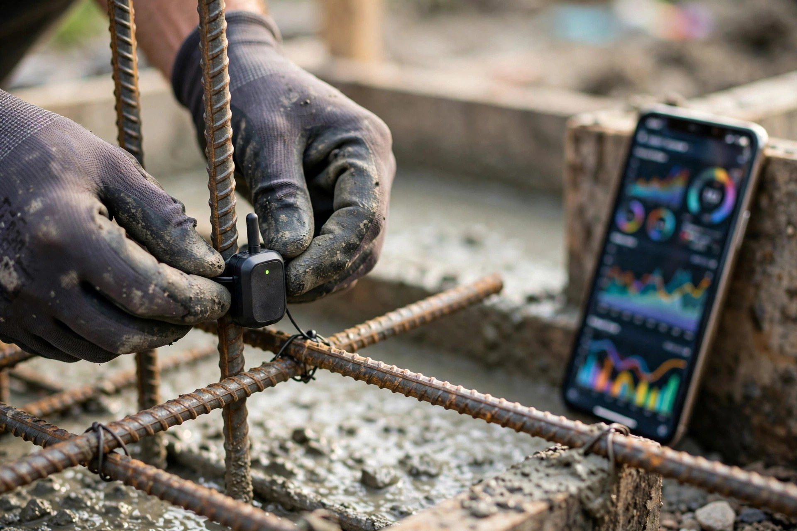

A $135 Sensor Predicts Your Foundation's Strength While It Cures. Your Builder Waits 28 Days and Hopes.
Shalom Buchnik managed the construction of a 1,050-foot office tower outside Tel Aviv. Embedded sensors from a company called GreenVibe reported that the concrete had not reached sufficient strength for the next operation, but lab tests said otherwise, and Buchnik trusted the lab. Repairing the resulting failure cost more than $500,000, according to Engineering News-Record reporting from August 2026. After that expensive lesson, the project team followed the sensors for every subsequent pour, and GreenVibe's real-time monitoring ultimately saved 98 working days on the same tower.
Half a million dollars. That is what it cost because somebody believed a lab sample over the concrete that was actually in the structure, which is the difference between measuring a test cylinder sitting on a shelf and measuring what is happening inside the pour itself, where temperature varies by location, reinforcement density affects heat dissipation, and the weather on pour day is not the weather in the testing lab four miles away.
Tools that measure concrete strength from inside the element exist at every price point from $135 to $4,000, and they work well enough that insurance companies have started discounting premiums for projects that use them. Commercial contractors deploy them on every significant pour because each day of unnecessary waiting costs $10,000 to $15,000 in schedule compression.
Residential builders pour your $40,000 foundation, strip the forms on day three or day seven depending on local habit, and move on. Nobody measures anything. Nobody records anything. Nobody comes back. If the foundation develops problems in ten years, there is no data from the day it was poured to indicate whether the concrete ever reached its design strength in the first place.
What the Sensors Measure and What the Calendar Does Not
Giatec's SmartRock3 is a wireless sensor the size of a deck of cards that straps to rebar before the pour, gets embedded in the concrete, and stays there permanently. Every fifteen minutes it measures temperature at two points and calculates compressive strength using the maturity method defined in ASTM C1074, a standard approved by ACI 318 and adopted by most state departments of transportation. Data transmits to a free smartphone app and a cloud dashboard, and a single sensor retails for $134.99 from HMA Lab Supply.
Giatec's newer SmartRock Pro pushes the technology further by eliminating the need for anyone to input the specific concrete mix design or establish a calibration curve. It is self-calibrating, using multiple sensing methods to determine strength independently of the mix it is embedded in, which means it catches the truck-to-truck variability in ready-mix delivery that every concrete contractor knows about but few admit to their clients. What arrived at 2 PM is not identical to what arrived at 9 AM, and a self-calibrating sensor knows that without being told.
GreenVibe's system, deployed on eleven paying projects as of mid-2026, embeds sensors that combine ultrasound, flexoelectric measurements, electrical resistivity, and temperature into a single device tied to rebar. Machine-learning algorithms running in the cloud analyze the combined data streams and determine strength from physical changes in the material itself, not from a proxy calculation based on temperature history alone. GreenVibe has produced approximately 10,000 sensors to date, with 70 to 80 percent deployed on active projects and the remainder used for model training and validation, per the company's statements to ENR.
Insurance Already Prices the Difference
In July 2026, Shepherd Insurance of San Francisco and Brickeye of Toronto announced a partnership that links builder's risk policy terms directly to concrete sensor deployment. Contractors who install Brickeye's LumiCon sensors receive tiered protection classifications, translating into premium credits and lower deductibles through Shepherd's pricing model. Brickeye's BuildersRiskIQ platform feeds real-time sensor data into underwriting decisions: water intrusion detection, thermal monitoring during mass concrete pours, and defect-risk flags that update continuously as the building goes up.
This is not a pilot. It is a commercial insurance product with structured pricing tiers, deployed in the market, rewriting how underwriters assess physical risk on vertical construction projects.
Concrete defects are among the costliest loss drivers in construction, and the logic connecting sensor data to insurance pricing is straightforward. A sensor that catches a thermal excursion during a mass pour, or detects that a slab did not reach specified strength before loads were applied, prevents the kind of failure that generates six- and seven-figure claims. Shepherd co-founder Justin Levine described the model as built on the thesis that financial services providers are uniquely positioned to incentivize loss prevention, while Brickeye CEO Tim Angus framed it as moving intelligence that previously lived only on the jobsite into the underwriting decision for the first time.
Nobody offers residential homeowners a premium discount for verifying their foundation cured correctly. The actuarial case is identical at smaller scale. The sensors exist at consumer price points, the data infrastructure is already built for smartphone delivery, and yet the residential insurance product simply has not been created.
What $810 Buys and What It Prevents
A typical 1,500-square-foot residential foundation uses 60 to 80 cubic yards of concrete and has four to six locations where monitoring strength development matters: footings, stem walls, slab center, and any section with differential thickness or embedded post-tension cables. At $135 per sensor, instrumenting those locations costs $540 to $810 against a foundation that runs $30,000 to $60,000, adding less than 2 percent to the concrete budget for something no residential builder currently provides.
Foundation repair costs when something goes wrong start at $5,000 for minor crack injection and run to $150,000 or more for full replacement, according to estimates from the Connecticut Department of Consumer Protection, which processed claims from homeowners whose pyrrhotite-contaminated foundations crumbled over a period of decades. FEMA documented up to 34,000 homes at risk in northeastern Connecticut alone, with collective economic impact approaching $1 billion. That was an aggregate contamination problem rather than a curing problem, and no sensor would have caught it during the initial pour, but I include it because it illustrates both the financial magnitude of foundation failures and the total absence of any baseline data that might have identified problems earlier or exonerated the concrete supplier sooner.
Curing problems that sensors do catch are subtler and more common than catastrophic contamination: concrete placed in cold weather that does not reach critical early strength before freezing, a pour that was too wet because the driver added water on site to improve workability without telling anyone, a footing loaded with framing lumber three days into a cure that needed five because of low ambient temperatures. None of these scenarios makes the evening news. They produce foundations that are weaker than designed, with compressive strength that plateaus at 85 or 90 percent of the specified 3,000 or 4,000 psi instead of reaching it. The house stands. It always does. Cracks that appear in year eight get attributed to settling or normal shrinkage, and nobody has data to say otherwise because nobody measured the concrete when it was being poured and nobody thought to ask whether day-three strength actually reached what the structural engineer specified.
Why Residential Builders Do Not Use Them
I have managed schedules on more projects than I can count, and the honest answer is that residential concrete is boring: pour it, form it, vibrate it if you are diligent, strip the forms, backfill, and move on to framing, because nothing about the residential construction timeline incentivizes a builder to know whether the concrete hit 2,500 psi on day four. If the schedule already assumes forms come off on day three and framing starts on day five, nobody is going to spend $135 per sensor to confirm what they were going to do anyway.
Commercial construction operates under completely different math. A high-rise floor cycle runs $10,000 to $15,000 per day in carrying costs, equipment rental, and labor standby, which means a sensor that tells you the post-tension slab reached 75 percent of design strength in 48 hours instead of a conservative 72 saves $20,000 to $30,000 by advancing the cycle two days and pays for itself before you pull the second reading. Residential builders do not face that kind of schedule pressure on foundation work, and different incentive structures produce different behaviors.
But that does not make the data worthless. It shifts the value proposition: in commercial construction, sensors save time, but in residential they create something more durable and ultimately more valuable than schedule compression. They create a record. A permanent, timestamped, cloud-archived record of what your foundation's concrete was actually doing during the most critical 72 hours of its existence, the kind of document that transforms how foundation disputes get resolved. When a crack appears in year eight, you pull the curing record and suddenly you can answer every question that matters: was there a thermal excursion, did the concrete reach specified strength, did it plateau early? Those data points replace what currently produces nothing but opposing expert opinions billed at $400 an hour.
What You Can Do
If you are building a home, write sensor deployment into your foundation contract. Specify the number and placement of sensors, require data to be shared with you in real time, and require the curing record to be included in the closing documentation for the property. A builder who resists monitoring a $40,000 pour with $600 worth of sensors is telling you something about their confidence in their work.
If you are a residential builder, consider what documentation does for your liability exposure over a ten-year warranty period. When a homeowner's lawyer sends a demand letter about foundation cracks nine years after construction, a curing record showing that every monitored point reached design strength on schedule is worth more than any warranty clause your attorney drafted. Giatec's SmartRock app exports PDF and CSV reports that live in their cloud indefinitely, which means your defense against a foundation crack allegation becomes a download rather than a $50,000 deposition battle between competing experts who never saw the pour.
If you are a homeowner's insurance underwriter, look at what Shepherd is doing with Brickeye on commercial builder's risk and consider what scaling it down to residential would require. Not much. A $135 sensor in a residential foundation generates the same actuarial signal as a $135 sensor in a commercial slab: verified strength data that reduces the probability of a structural failure claim, delivered through consumer-grade infrastructure that already exists and already works. Building the residential product is not an engineering challenge; it is a product management decision that nobody has made yet.
Limitations
Giatec's SmartRock uses the maturity method (ASTM C1074), which estimates strength from temperature history and requires establishing a strength-maturity relationship for the specific concrete mix, so accuracy depends on calibration quality. GreenVibe's ML-based multi-sensor approach does not require mix-specific calibration but is not approved to replace required concrete acceptance testing in the United States, and the company is currently participating in ASTM Committee C09 to develop standards for its approach. Sensor pricing reflects retail as of August 2026 and does not include the SmartHub ($3,950) for projects requiring 24/7 remote monitoring without site visits. The $540-$810 estimate for a residential foundation assumes four to six sensors placed at critical locations, not comprehensive coverage of the entire pour. The Connecticut pyrrhotite example illustrates foundation failure costs but represents a fundamentally different failure mechanism than what curing sensors detect. Shepherd's insurance product with Brickeye currently covers commercial builder's risk only, and no residential equivalent exists. The suggestion that one should be built is editorial opinion, not established industry practice.